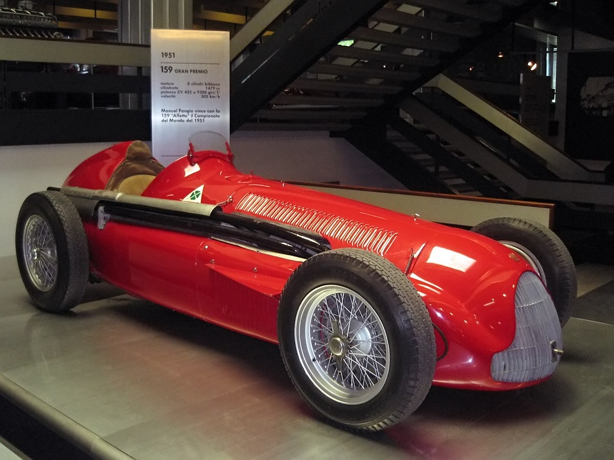

Bevezetés
A Formula–1 ( F1 ) a Formula–1 Csoport által szervezett és a Nemzetközi Automobil Szövetség (FIA) által jóváhagyott, nyitott karosszériás, együléses formula versenyautók legmagasabb szintű világméretű versenysorozata. Az FIA Formula – 1 Világbajnokság az 1950 -es indulása óta a világ egyik legfontosabb motorsport- formula , és gyakran a motorsport csúcsának tekintik. A névben szereplő „formula” szó azokra a szabályokra utal , amelyeket minden résztvevő autónak be kell tartania. Egy Formula–1-es szezon versenyek sorozatából áll, amelyeket Grands Prix- nek neveznek . A Grands Prix-ket több országban és kontinensen rendezik, erre a célra épített pályákon vagy lezárt utakon.
Története
A Formula–1 a gyártók világbajnokságából ( 1925–1930 ) és az egyéni versenyzők Európa-bajnokságából ( 1931–1939 ) ered . A formula egy szabályrendszer, amelyet minden résztvevő autójának be kell tartania. A második világháború előtt számos nagydíj - szervezet javasolta egy új bajnokság létrehozását az Európa-bajnokság helyett, de a versenyzés felfüggesztése miatt a konfliktus miatt az új nemzetközi autóformula csak a háború után vált hivatalossá. A Formula–1 egy 1946 -ban elfogadott formula volt, amely hivatalosan 1947- ben lépett hatályba . Az új szabályok szerinti első nagydíj az 1946-os torinói nagydíj volt, amely a formula hivatalos kezdetét jelentette. Az új világbajnokság kezdetét 1950 -re tervezték.
Az első világbajnoki futamra, az 1950-es Brit Nagydíjra 1950. május 13-án került sor az Egyesült Királyságban, a Silverstone Circuit versenypályán. [ 4 ] Az Alfa Romeo színeiben versenyző Giuseppe Farina nyerte az első egyéni világbajnokságot, szoros küzdelemben legyőzve csapattársát, Juan Manuel Fangiót . Fangio 1951- ben , 1954-ben , 1955-ben , 1956-ban és 1957-ben is megnyerte a bajnokságot . [ 5 ] Ez rekordot állított fel az egyetlen versenyző által elnyert legtöbb világbajnokság tekintetében, ez a rekord 46 évig állt, amíg Michael Schumacher 2003-ban megszerezte hatodik bajnokságát.
Az 1958-as szezonban bevezették a konstruktőri bajnokságot . Stirling Moss , annak ellenére, hogy gyakran az 1950-es és 1960-as évek egyik legnagyobb Forma-1-es pilótájaként tartották számon, soha nem nyerte meg a Forma-1-es bajnokságot. [ 6 ] 1955 és 1961 között Moss négyszer második, a másik háromszor pedig harmadik helyen végzett a bajnokságban. Fangio az 52 futamból 24-et megnyert – ez még mindig a legmagasabb Forma-1-es győzelmi arány rekordja az egyéni pilóták között.
{kind=link}

A szervezők éveken át a bajnokságon kívül is rendeztek versenyeket a Forma-1 szabályai szerint. Ezek az események gyakran olyan pályákon zajlottak, amelyek nem mindig voltak alkalmasak a világbajnokság megrendezésére, és helyi autókat és pilóták vettek részt rajtuk a bajnokságban versenyzők mellett. Például a dél-afrikai hazai Forma-1-es bajnokság 1960 és 1975 között helyben gyártott vagy módosított autókat használt a nemrégiben kivont világbajnoki autók mellett. Hasonlóképpen, a brit Forma-1-es bajnokság használt autókat használt, olyan gyártóktól származó autókat, mint a Lotus és a Fittipaldi Automotive , amelyeket 1978 és 1980 között DFV- vel szereltek fel. A verseny növekvő költségei azonban az 1970-es években ritkábbá tették az ilyen versenyeket. 1983-ban rendezték meg az utolsó nem bajnokságon belüli Forma-1-es versenyt; az 1983-as Bajnokok Versenyeit Brands Hatch-ben, amelyet a címvédő világbajnok Keke Rosberg nyert egy Williams - Cosworth- tal szoros küzdelemben az amerikai Danny Sullivannal .
A sportág jelene
A 2024-es szezon a Forma–1 történetének eddigi leghosszabb idénye, amely összesen 24 futamból áll, érintve minden kontinenst. A sportág jelenlegi uralkodója a holland Max Verstappen, aki a Red Bull Racing színeiben zsinórban három világbajnoki címet szerzett (2021, 2022, 2023).
A modern éra a fenntarthatóságról és a hibrid technológiáról szól. Az autók 1,6 literes V6-os turbómotorokat használnak, amelyeket bonyolult energia-visszanyerő rendszerek (ERS) egészítenek ki. Az F1 célkitűzése, hogy 2030-ra teljesen karbonsemlegessé váljon.
A versenyhétvége menete
| Nap | Esemény | Leírás |
|---|---|---|
| Péntek | Szabadedzések (FP1, FP2) | A csapatok tesztelik a beállításokat és a gumikat. |
| Szombat | Időmérő edzés (Qualifying) | A leggyorsabb köridő alapján dől el a vasárnapi rajtsorrend. |
| Szombat* | Sprint verseny | Bizonyos hétvégéken tartott rövid verseny extra pontokért. |
| Vasárnap | Nagydíj (Race) | A főverseny, ahol a pontok többségét kiosztják. |
Érdekességek és Rekordok
- Villámgyors kerékcsere: A McLaren tartja a világrekordot, egy ízben mindössze 1,80 másodperc alatt cserélték le mind a négy kereket.
- G-erők: A pilótákra kanyarodás közben akár 5-6 G erő is hathat, ami olyan, mintha a fejük súlya hirtelen az ötszörösére nőne.
- A legsikeresebbek: Michael Schumacher és Lewis Hamilton osztozik a rekordon, mindketten 7-szeres világbajnokok.
- Hőség a pilótafülkében: Egy forróbb versenyen (például Szingapúrban) a pilóták akár 3-4 kilogrammot is veszíthetnek a testsúlyukból a nagy hőség és a fizikai megterhelés miatt.
Gyakori kérdések
Mi az a DRS?
A hátsó szárny nyitható eleme, amely csökkenti a légellenállást, így segítve az előzést az egyenesekben.
Mire jók a különböző színű gumik?
A piros (lágy) a leggyorsabb, de hamar elkopik. A sárga (közepes) az arany középút, a fehér (kemény) pedig lassabb, de nagyon tartós.
Hány csapat van a mezőnyben?
Jelenleg 10 csapat vesz részt a bajnokságban, csapatonként 2-2 versenyzővel.